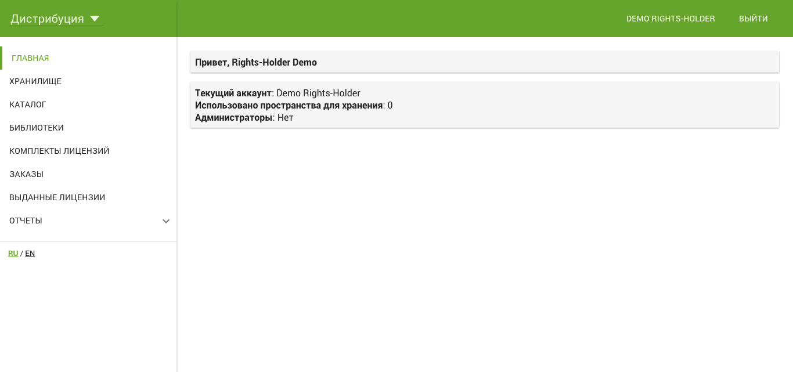
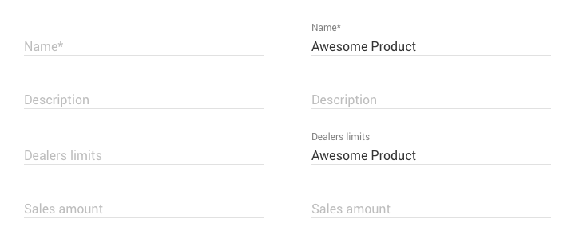
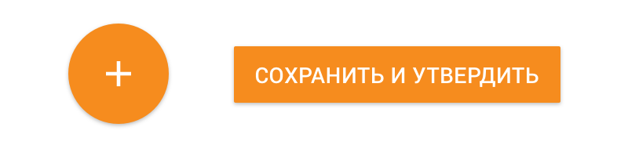

Материальный дизайн и Аггрегион
Когда я присоединился к Аггрегиону, приложение уже работало, оно было сделано разработчиками. Ещё до моего прихода был выбран материальный дизайн на основе ангуляра. Это по сути было простым решением — потому что бутстрап надоел, и разработчики
подумали, что это будет здорово. Я раньше не сталкивался с энтерпрайз системами, да и чего уж, не мобтльными материальными приложениями. И имел некоторые сомнения по этому поводу. В общем, первая версия приложения была сделана разработчиками.
ПМ и бизнес, хотели его немножко украсить. Я хотел украсить-улучшить мелочами.

Так всё это выглядело
Плавающие лейблы
Пока я не сталкивался с плавающими лейблами, мне казалось это хорошей идеей. Не надо придумывать плейсхолдеры, а лейблы всегда нужны.
Но обнаружилась неприятная, режущая глаз мелочь. Отступы сильно варьировались в зависимости от заполненности/незаполненности.
Т.к. я хотел добавить воздуха, чтобы формы не слипались, в незаполненных местах создавались большие пропасти.
Так стандартный отступ между элементами был —30px, но без лейбла он увеличивался до 50px.

Слева незполненные, справа заполненные поля. Некоторые блоки слипаются визуально, но по смыслу они не имеют ничего общего.
FAB-кнопки
Мой подход к проектированию — у экрана всегда должна быть главная цель, которую следует выполнить.
В материальном дизайне эта идея тоже присутствует и она реализована фаб-кнопкой.
Кнопка большая, и рядом с большим пальцем. Минус — она неподписана.
Неподписанная иконка (кроме пары действий, к которым все более менее привыкли типа сохранения, редактирования и удаления)
вызывает страх, и люди на неё стараются не нажимать и даже не наводить.
Поэтому нам круглая кнопка не подходила, т.к. кроме сохранения у нас обычно были ещё и параллельные процессы — как то переход к следующей стадии формы.
Соответственно фаб-кнопка трансформировалась у нас в ФАБ-панель с главным действием(кнопкой) и второстепенными (мат-ссылками).
В моём представлении фаб-панель всегда должна быть видна, приклееной снизу, но мы это пока не реализовали.

В данном случае определить значение кнопки слева возможно, но когда кнопка делает более сложную вещь фабы уже не подходят.